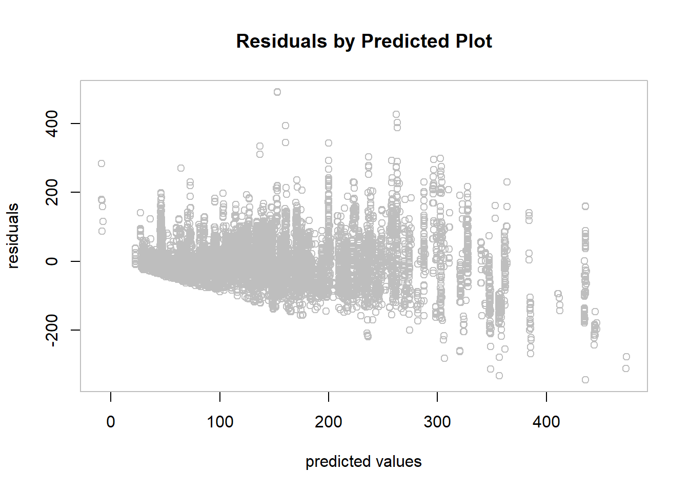

#The variances of two groups are substantially different, therefore the Welch (or Satterthwaite) approximation is used and the pooled estimator of variance is not used.
t.test(dat1$value_sqft,dat0$value_sqft,alternative="greater",var.equal = FALSE)##
## Welch Two Sample t-test
##
## data: dat1$value_sqft and dat0$value_sqft
## t = 18.915, df = 2803.8, p-value < 2.2e-16
## alternative hypothesis: true difference in means is greater than 0
## 95 percent confidence interval:
## 46.61047 Inf
## sample estimates:
## mean of x mean of y
## 170.4451 119.3938The p-value for one-sided two sample t-test is much less than 0.01, suggesting that the mean of value_sqft for properties within a quarter miles from transit stations are significantly larger than those located more than a quarter miles away from transit stations.
library(perm)
rules <- permControl(nmc=5000)
permTS(dat1$value_sqft,dat0$value_sqft,alternative="greater",method="exact.mc",control=rules)##
## Exact Permutation Test Estimated by Monte Carlo
##
## data: GROUP 1 and GROUP 2
## p-value = 2e-04
## alternative hypothesis: true mean GROUP 1 - mean GROUP 2 is greater than 0
## sample estimates:
## mean GROUP 1 - mean GROUP 2
## 51.05137
##
## p-value estimated from 5000 Monte Carlo replications
## 99 percent confidence interval on p-value:
## 0.000000000 0.001059102Though the result of 5000 random permutation test is less significant than the two-sample t-test, it is still significant at 0.01 level. This result is consistent with the two-sample t-test. Therefore, the evidence is strong enough to reject the null hypothesis in favor of the alternative hypothesis that mean value_sqft is greater for properties within a quarter mile from transit stations compared to those that are not.
As the main object for this project is to examine whether proximity to transit stations for a property increases people’s willingness to pay for it, first let us develop a simple regression model for qrtmile.
reg00<-lm(log(value_sqft)~ factor(qrtmile),data=dat)
summary(reg00)##
## Call:
## lm(formula = log(value_sqft) ~ factor(qrtmile), data = dat)
##
## Residuals:
## Min 1Q Median 3Q Max
## -3.00453 -0.47546 0.05268 0.46239 1.96364
##
## Coefficients:
## Estimate Std. Error t value Pr(>|t|)
## (Intercept) 4.571408 0.004231 1080.40 <2e-16 ***
## factor(qrtmile)1 0.154512 0.014338 10.78 <2e-16 ***
## ---
## Signif. codes: 0 '***' 0.001 '**' 0.01 '*' 0.05 '.' 0.1 ' ' 1
##
## Residual standard error: 0.7012 on 30081 degrees of freedom
## Multiple R-squared: 0.003846, Adjusted R-squared: 0.003813
## F-statistic: 116.1 on 1 and 30081 DF, p-value: < 2.2e-16Though the coefficient of qrtmile is significant, the r-squared is very low (0.004). This is not surprising since the qrtmile is a categorical variable, which fits poorly in simple linear regression. Furthermore, as described in the introduction section, the variation in value_sqft is expected to be associated with many other variables. Notice, however, the sign of the coefficient is positive, which suggest that, being within a quarter mile away from transit stations have positive effect on value_sqft , which conforms to previous conclusion.
# result contradicts the observations
reg0<-lm(value_sqft~ dist * factor(qrtmile),data=dat)
summary(reg0)##
## Call:
## lm(formula = value_sqft ~ dist * factor(qrtmile), data = dat)
##
## Residuals:
## Min 1Q Median 3Q Max
## -163.83 -55.77 -18.78 26.32 576.17
##
## Coefficients:
## Estimate Std. Error t value Pr(>|t|)
## (Intercept) 1.102e+02 7.561e-01 145.77 <2e-16 ***
## dist 8.969e-04 5.282e-05 16.98 <2e-16 ***
## factor(qrtmile)1 6.236e+01 6.140e+00 10.16 <2e-16 ***
## dist:factor(qrtmile)1 -3.297e-03 6.593e-03 -0.50 0.617
## ---
## Signif. codes: 0 '***' 0.001 '**' 0.01 '*' 0.05 '.' 0.1 ' ' 1
##
## Residual standard error: 87.55 on 30079 degrees of freedom
## Multiple R-squared: 0.03533, Adjusted R-squared: 0.03524
## F-statistic: 367.2 on 3 and 30079 DF, p-value: < 2.2e-16Now it is time to add all other variables to the regression model. Since several other variables demonstrate interactions with qrtmile more or less in the preliminary analysis section, these interactions should be included in the regression model. This model could be stated as:
value_sqft\(=\beta_0+\beta_1*dist*qrtmile+\beta_2*medInc*qrtmile+\beta_3*vacRate*qrtmile+\beta_4*condition\) \(+\beta_5*dist+\beta_6*medInc+\beta_7*vacRate+\beta_8*condition\)
# result contradicts the observations
reg1<-lm(value_sqft~dist * factor(qrtmile) + medInc * factor(qrtmile) + vacRate * factor(qrtmile) + factor(condition),data=dat)
summary(reg1)##
## Call:
## lm(formula = value_sqft ~ dist * factor(qrtmile) + medInc * factor(qrtmile) +
## vacRate * factor(qrtmile) + factor(condition), data = dat)
##
## Residuals:
## Min 1Q Median 3Q Max
## -344.37 -24.76 -7.34 16.69 491.00
##
## Coefficients:
## Estimate Std. Error t value Pr(>|t|)
## (Intercept) 9.652e+00 1.342e+00 7.190 6.64e-13 ***
## dist -8.102e-04 3.664e-05 -22.114 < 2e-16 ***
## factor(qrtmile)1 2.149e+01 5.972e+00 3.599 0.00032 ***
## medInc 2.690e-03 1.959e-05 137.334 < 2e-16 ***
## vacRate -6.684e+01 5.667e+00 -11.794 < 2e-16 ***
## factor(condition)1 8.775e+01 1.089e+00 80.572 < 2e-16 ***
## dist:factor(qrtmile)1 -1.384e-03 4.017e-03 -0.345 0.73044
## factor(qrtmile)1:medInc 6.277e-04 4.728e-05 13.277 < 2e-16 ***
## factor(qrtmile)1:vacRate -1.435e+02 2.086e+01 -6.880 6.10e-12 ***
## ---
## Signif. codes: 0 '***' 0.001 '**' 0.01 '*' 0.05 '.' 0.1 ' ' 1
##
## Residual standard error: 53.28 on 30074 degrees of freedom
## Multiple R-squared: 0.6428, Adjusted R-squared: 0.6427
## F-statistic: 6764 on 8 and 30074 DF, p-value: < 2.2e-16Except for the coefficient of dist:factor(qrtmile1), all other coefficients are significant. Recall that in the Preliminary Analysis section, the plot of value_sqft by dist for qrtmile=1 suggests that there is no significant linear relationship between dist and value_sqft for this group. The non-significant coefficient agrees with this observation. The R-squared is 0.64, which means that 64% of the variation in value_sqft is explained by this model.
These (significant) coefficients could be interpreted as follows:
+Intercept: the interpretation is not meaningful here.
+dist: holding median household income and vacancy rate of the parent census tract as well as condition constant, an additional increase of distance from the nearest transit station is associated with a decrease of 8.142e-04 dollars in its market value per square footage, if the property is more than a quarter mile away from the nearest station.
+factor(qrtmile)1: If the median household income and vacancy rate of the parent census tract are zero, and the exterior condition of a property is not above average, the market value per square footage for this property would be 2.179e+01 dollars higher when it is located within a quarter mile from the nearest transit station than when it is not. (Again, this is not very meaningful)
+medInc: as median household income increases by 1 dollar, the main effect of it is that market value per square footage increases 2.696e-03 dollars, if holding all other terms constant. However, medInc also appears in interaction terms, so the effect of medInc can only be partially interpreted here.
+vacRate: as vacancy rate increases by 1 percentage, the main effect of it is that market value per square footage decreases 6.611e+01 dollars, if holding all other terms constant. However, * vacRate * also appears in interaction terms, so the effect of * vacRate* can only be partially interpreted here.
+factor(condition)1: on average, the market value per square footage for properties with above-average exterior condition is 8.761e+01 dollars higher than that for those that are not above average, if holding medInc,dist,vacRate constant.
+factor(qrtmile)1: medInc: the positive effect of being within a quarter mile away from the nearest transit station on market value per square footage is 6.267e-04 dollars higher as median household income increases by 1 dollar, holding vacRate,dist, and condition constant.
+factor(qrtmile)1: vacRate: the negative effect of being within a quarter mile away from the nearest transit station on market value per square footage is 1.449e+02 dollars higher as vacancy rate increases by 1 percentage, holding medInc,dist, and condition constant.
Finally, it is necessary to check whether the assumptions of multiple regression still hold for this model.
par(mfrow = c(1,2),cex=0.7)
hist(reg1$residuals)
qqPlot(reg1)
summary(reg1$residuals)## Min. 1st Qu. Median Mean 3rd Qu. Max.
## -344.368 -24.762 -7.336 0.000 16.688 490.997The histogram of residuals and the Normal quantile plot show that distribution is skewed. However, given that the sample size is very large, this skewness is not strong enough to invalidate the analysis.
par(col="grey")
plot(reg1$fitted.values,reg1$residuals,xlab="predicted values",ylab="residuals",main="Residuals by Predicted Plot")The residuals by predicted plot also suggests that the residuals are heteroscedastic (variances are not constant at different predicted values) This is not surprising given that there are many observations with extreme high market values per square footage, which cannot be fully explained by this model. Again, this heteroscedasticity is not strong enough to invalidate the analysis.